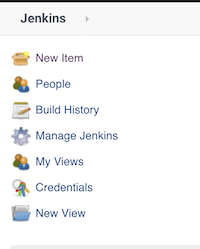
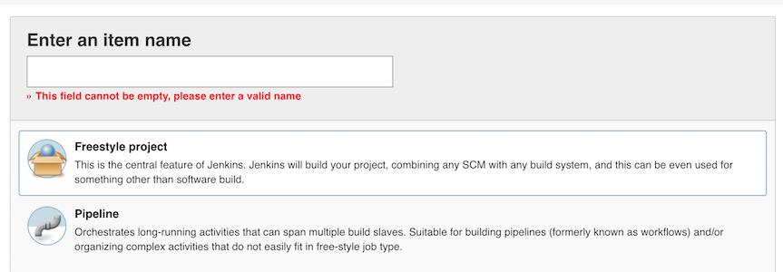
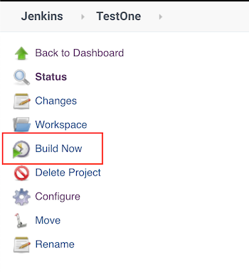
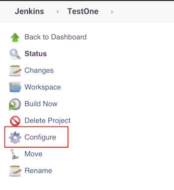
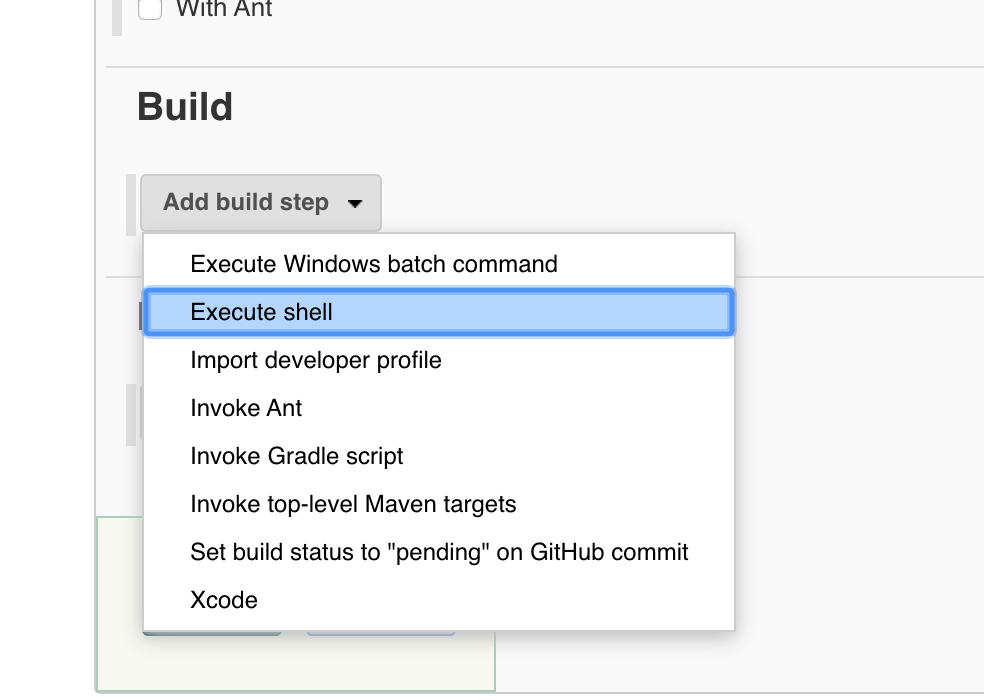
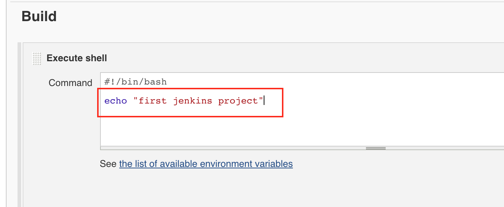
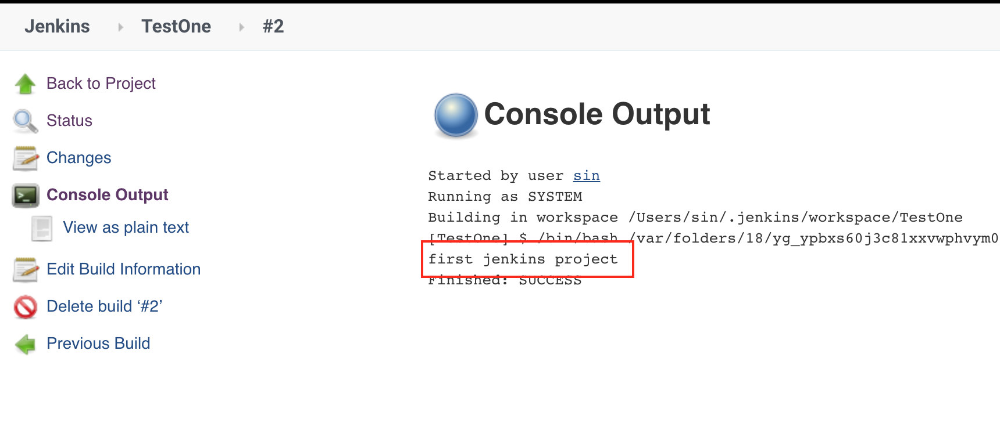

Jenkins 1.创建简单项目
1.New Item
点击左侧栏的 New Item

2.输入项目名称并创建 Freestyle Project

3.Save and Build Now

如此一个 jenkins 工程就创建完成了
4.执行 shell 脚本
点击 Configure，进行配置

滚动到页面最底部的 Build 项目，选择 Execute shell

然后在输入框写入 shell 命令

保存配置，重新启动 jenkins，就可以看到脚本中输出的信息
